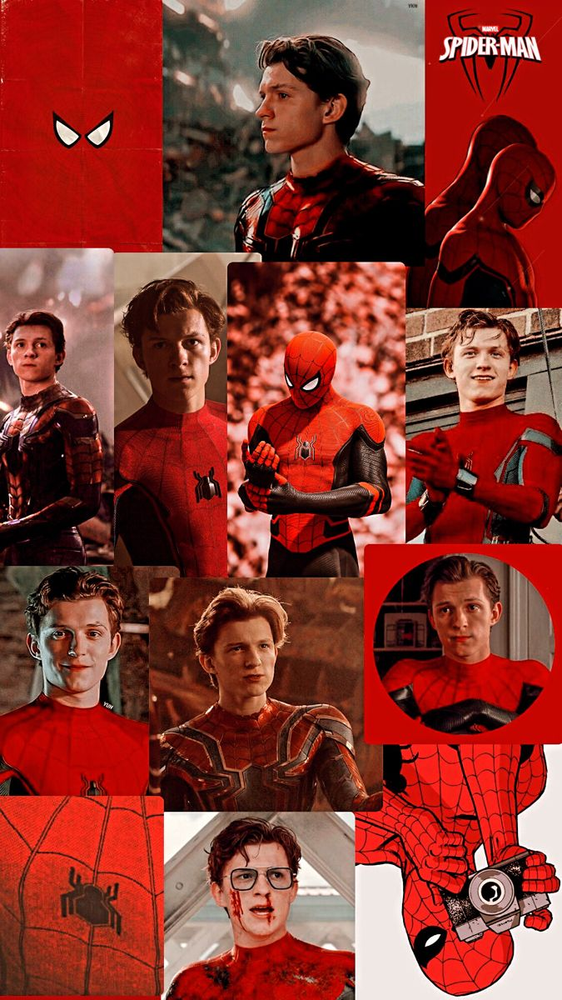

Tom es un Spiderman adolescente puro y duro, con los conflictos y expectativas de un adolescente lo que lo hace ver muy natural en su inseguridad, inocencia y timidez siendo Peter Parker. Es bien inteligente y creativo, pero parece ser el más genuinamente noble de los Spiderman anteriores, Tom se muestra como un Spiderman novato tratando de encajar y hallar su propio modo de trabajo (su propio estilo).
La carencia de una figura de autoridad masculina se nota cuando este desarrolla un fuerte lazo afectivo por Tony Stark, siendo este último su tutor en su vida como héroe y como joven superdotado.
El Peter de Tom parece ser ingenuo por su edad y probablemente sea el mas ansioso de todos los Spiderman mostrando constantemente su admiración y su asombro por cada nueva experiencia que vive , sin embargo probablemente sea el Spiderman más determinado e intrépido de los 3, característica relevante del Spiderman original de los comics dado que siendo mucho más joven que sus contrapartes este parece buscar el peligro y desear constantemente tratar de demostrar su madurez y habilidades , aunque en un principio no es muy talentoso muestra su gran valentía y osadía al estar expuesto a peligros mucho mas mayores a los que estuvieron expuestos sus anteriores versiones.
Su carisma como Spiderman ya no estaría vinculado a su espontaneidad si no mas bien a su honestidad y inocencia, no empatiza como Andrew con los diferentes villanos a los que enfrenta, pero tampoco inhibe de forma drástica sus emociones como lo hacia Tobey, emocionalmente parece el más maduro hasta ahora, al lidiar con sus relaciones sentimentales acorde a la etapa del desarrollo en la que se encuentra.
Probablemente Tom se siente constantemente subestimado y con poco control de su realidad en su vida, Spiderman es una forma donde este se empodera y donde empieza a tener el control de su propio medio tomando decisiones que arriesgan su vida para demostrar que este puede lidiar con grandes responsabilidades.